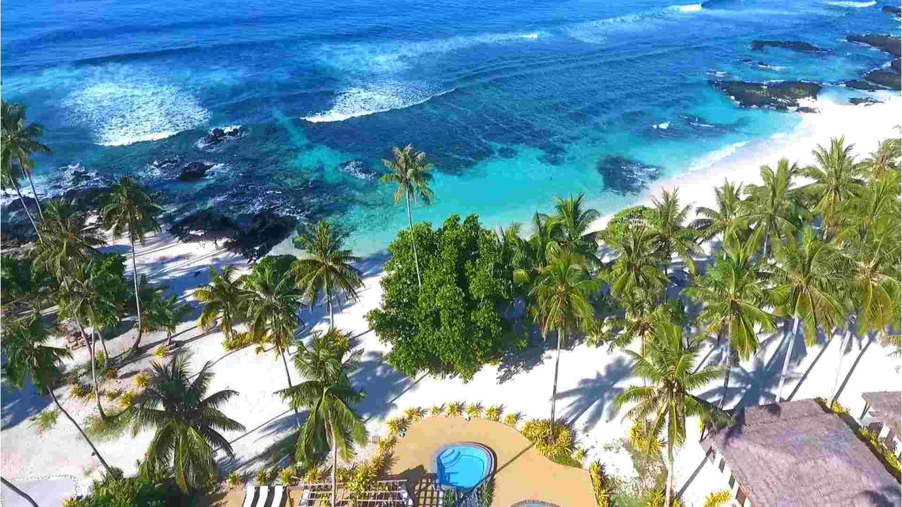

Why visit Samoa
From turquoise lagoons to generous village hospitality, Samoa offers a slower, more meaningful kind of island getaway.

Discover the heart of the islands
Experience the warmth of Samoa through oceanfront adventures, village traditions, and unforgettable local food.

From turquoise lagoons to generous village hospitality, Samoa offers a slower, more meaningful kind of island getaway.
Dry and sunny from May to October makes hiking, snorkeling, and beach afternoons ideal.
Family-friendly, culture-rich, and adventure-focused with room for breathtaking downtime.
Featured highlights
Culture & connection
Whether you are listening to music at sunset, tasting fresh seafood, or joining a local dance circle, every moment invites you to slow down and enjoy the beauty of island life.